Todos los Mundiales
Uruguay 1930
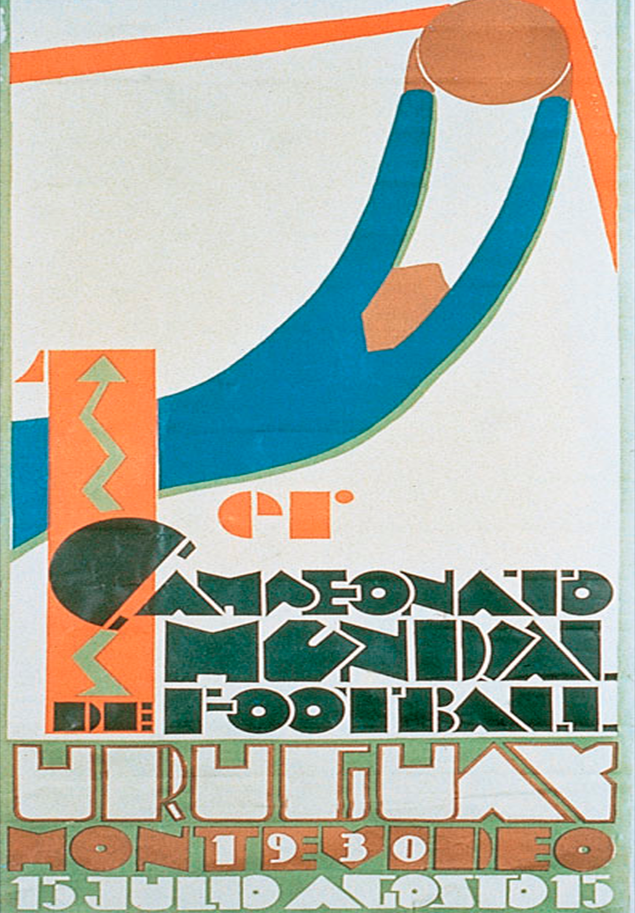
Sede: Uruguay
Campeón: Uruguay
Subcampeón: Argentina
Final: Uruguay 4-2 Argentina
Goleador: Guillermo Stábile (Argentina) - 8 goles
Datos relevantes: El primer Mundial de la FIFA se celebró en Uruguay en 1930. Uruguay ganó el torneo tras vencer 4-2 a Argentina en la final. Fue el primer torneo mundial de fútbol y participaron 13 equipos.
Italia 1934

Sede: Italia
Campeón: Italia
Subcampeón: Checoslovaquia
Final: Italia 2-1 Checoslovaquia (Tiempo extra)
Goleador: Raimundo Orsi (Italia) - 3 goles
Datos relevantes: Italia ganó su primer título mundial, derrotando a Checoslovaquia 2-1 en tiempo extra. Este torneo fue el primero con eliminatorias previas, y se jugó en un sistema de eliminación directa desde el inicio.
Brasil 1950
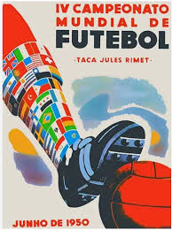
Sede: Brasil
Campeón: Uruguay
Subcampeón: Brasil
Final: Uruguay 2-1 Brasil (Maracanazo)
Goleador: Ademir de Menezes (Brasil) - 8 goles
Datos relevantes: Uruguay derrotó a Brasil 2-1 en el famoso "Maracanazo" en la final, en uno de los mayores logros en la historia de los mundiales. Este torneo se destacó por el formato único de una fase de grupos final en lugar de una eliminatoria directa.
Suiza 1954
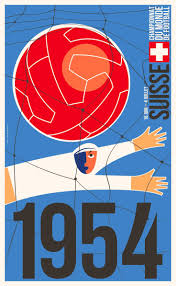
Sede: Suiza
Campeón: Alemania Federal
Subcampeón: Hungría
Final: Alemania Federal 3-2 Hungría
Goleador: Sándor Kocsis (Hungría) - 11 goles
Datos relevantes: Alemania Federal ganó su primer título mundial tras derrotar a Hungría 3-2 en la final, en uno de los partidos más recordados de la historia. Este torneo fue el primero en contar con un formato de eliminación directa después de la fase de grupos.
Suecia 1958
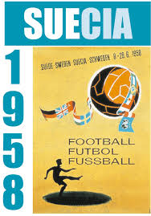
Sede: Suecia
Campeón: Brasil
Subcampeón: Suecia
Final: Brasil 5-2 Suecia
Goleador: Just Fontaine (Francia) - 13 goles
Datos relevantes: Brasil ganó su primer título mundial con una gran actuación de Pelé, quien a sus 17 años se consagró como máximo goleador. La final terminó 5-2 a favor de Brasil, que dejó una huella imborrable en el torneo.
Chile 1962
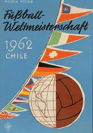
Sede: Chile
Campeón: Brasil
Subcampeón: Checoslovaquia
Final: Brasil 3-1 Checoslovaquia
Goleador: Garrincha (Brasil) - 4 goles
Datos relevantes: Brasil ganó su segundo Mundial con una gran actuación de Garrincha, quien asumió el liderazgo tras la lesión de Pelé. En la final, derrotaron a Checoslovaquia 3-1. Fue el primer torneo en que participaron equipos de África y Asia.
Inglaterra 1966
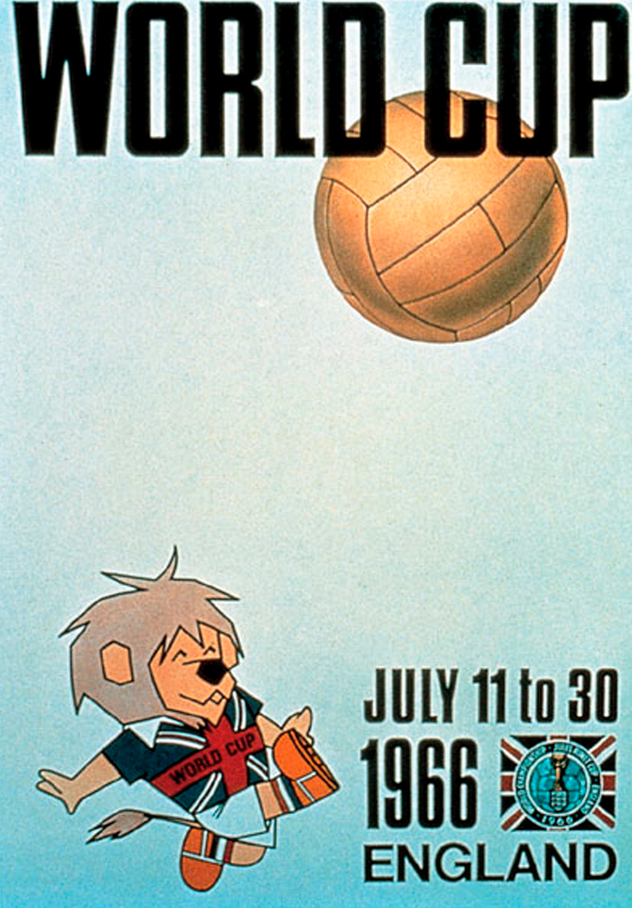
Sede: Inglaterra
Campeón: Inglaterra
Subcampeón: Alemania Federal
Final: Inglaterra 4-2 Alemania Federal (Tiempo extra)
Goleador: Eusébio (Portugal) - 9 goles
Datos relevantes: Inglaterra ganó su único Mundial al derrotar a Alemania Federal 4-2 en tiempo extra. Fue el primer torneo en que se utilizó la tecnología para ayudar a los árbitros a decidir jugadas controvertidas.
México 1970
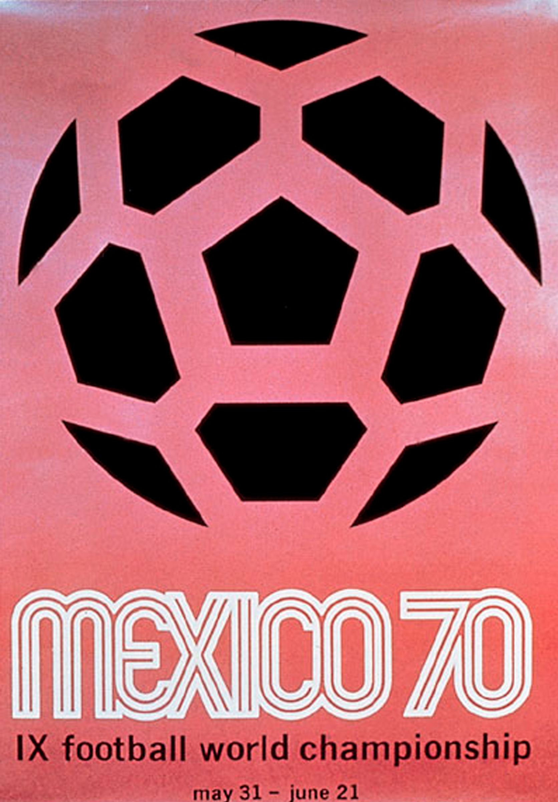
Sede: México
Campeón: Brasil
Subcampeón: Italia
Final: Brasil 4-1 Italia
Goleador: Gerd Müller (Alemania Federal) - 10 goles
Datos relevantes: Brasil ganó su tercer Mundial, convirtiéndose en el primer país en conseguir este hito. La final fue una exhibición de fútbol con Brasil derrotando a Italia 4-1. Este torneo es recordado por la calidad de los jugadores como Pelé y la mítica selección brasileña.
Alemania Federal 1974
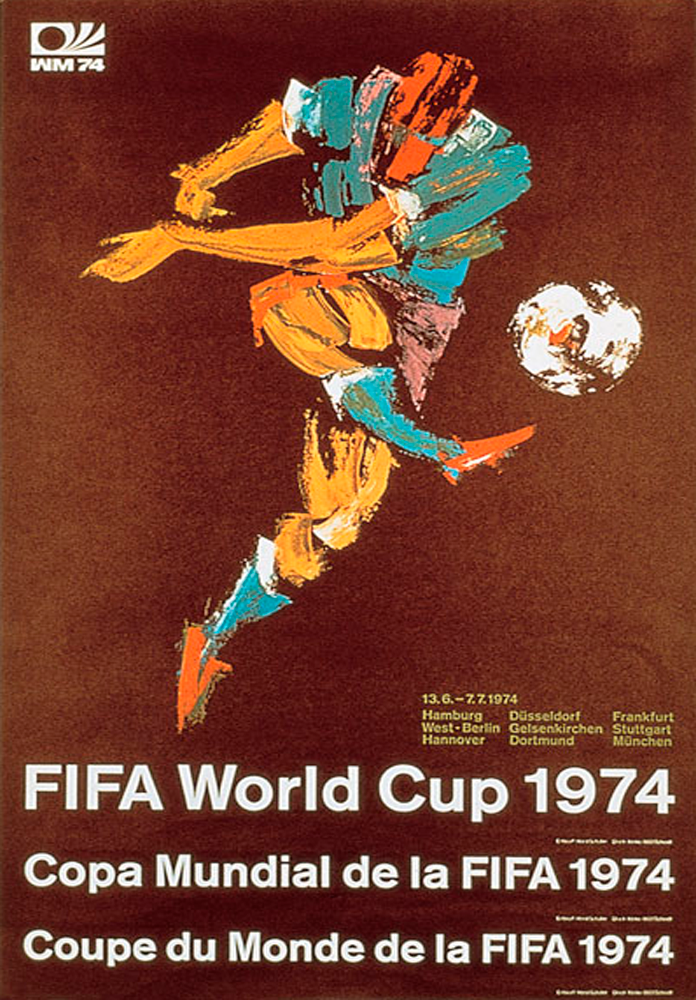
Sede: Alemania Federal
Campeón: Alemania Federal
Subcampeón: Países Bajos
Final: Alemania Federal 2-1 Países Bajos
Goleador: Gerd Müller (Alemania Federal) - 10 goles
Datos relevantes: Alemania Federal ganó su segundo título mundial al derrotar a los Países Bajos 2-1 en la final. Este torneo fue el primero en contar con un formato de grupos de clasificación más amplio.
Argentina 1978

Sede: Argentina
Campeón: Argentina
Subcampeón: Países Bajos
Final: Argentina 3-1 Países Bajos (Tiempo extra)
Goleador: Mario Kempes (Argentina) - 6 goles
Datos relevantes: Argentina ganó su primer título mundial tras vencer a los Países Bajos 3-1 en tiempo extra en la final. Este torneo se destacó por la gran actuación de Mario Kempes, quien fue el máximo goleador del torneo.
España 1982
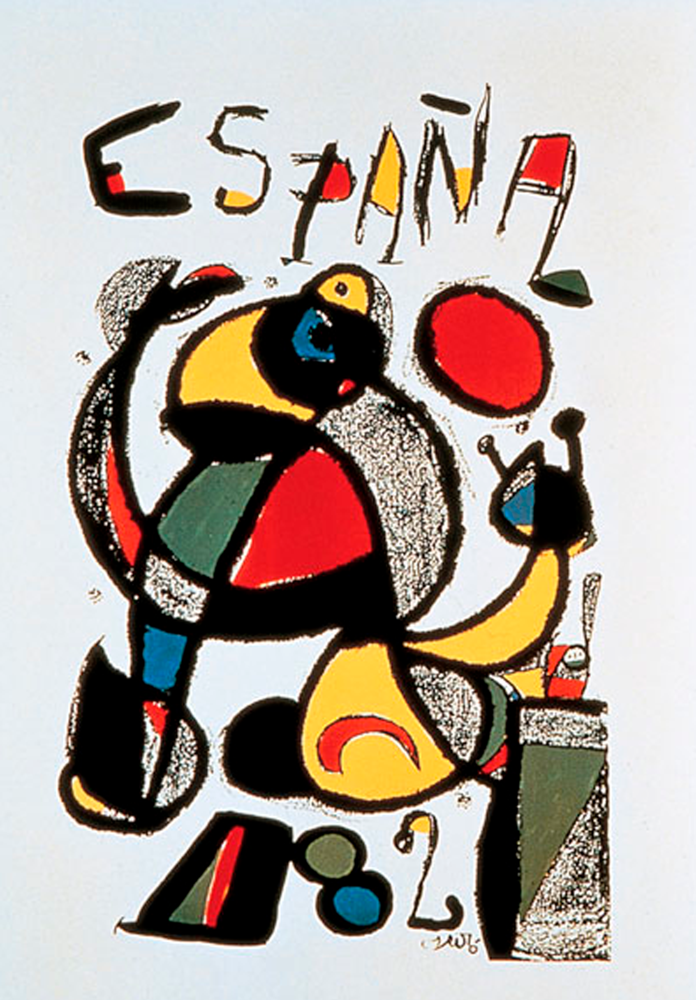
Sede: España
Campeón: Italia
Subcampeón: Alemania Federal
Final: Italia 3-1 Alemania Federal
Goleador: Paolo Rossi (Italia) - 6 goles
Datos relevantes: Italia se coronó campeón por tercera vez, al derrotar a Alemania Federal 3-1 en la final. Este torneo fue notable por la calidad de juego de equipos como Brasil, aunque fueron eliminados en semifinales por Italia.
México 1986
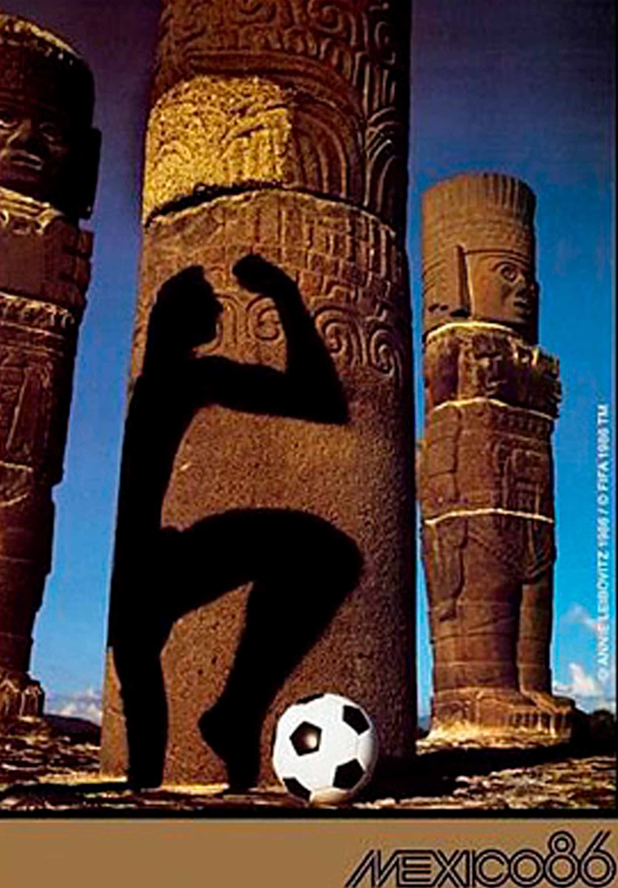
Sede: México
Campeón: Argentina
Subcampeón: Alemania Federal
Final: Argentina 3-2 Alemania Federal
Goleador: Gary Lineker (Inglaterra) - 6 goles
Datos relevantes: Argentina ganó su segundo título mundial con una actuación memorable de Diego Maradona, quien protagonizó los goles más famosos en la historia del fútbol, como la "Mano de Dios" y el gol conocido como "El Gol del Siglo" contra Inglaterra.
Italia 1990
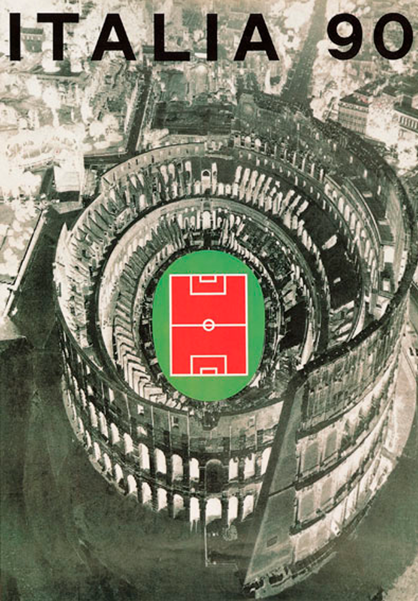
Sede: Italia
Campeón: Alemania Federal
Subcampeón: Argentina
Final: Alemania Federal 1-0 Argentina
Goleador: Salvatore Schillaci (Italia) - 6 goles
Datos relevantes: Alemania Federal ganó su tercer título mundial al derrotar a Argentina 1-0 en la final. Este torneo es recordado por su defensivo estilo de juego y por la eliminación de equipos favoritos como Brasil y Inglaterra.
Estados Unidos 1994

Sede: Estados Unidos
Campeón: Brasil
Subcampeón: Italia
Final: Brasil 0-0 Italia (Brasil ganó 3-2 en penales)
Goleador: Oleg Salenko (Rusia) - 6 goles
Datos relevantes: Brasil ganó su cuarto título mundial al vencer a Italia en una tanda de penales (3-2) tras un empate 0-0. Este torneo es recordado por el debut de jugadores como Roberto Baggio y la presencia de un alto nivel de competencia.
Francia 1998

Sede: Francia
Campeón: Francia
Subcampeón: Brasil
Final: Francia 3-0 Brasil
Goleador: Davor Šuker (Croacia) - 6 goles
Datos relevantes: Francia ganó su primer Mundial al derrotar a Brasil 3-0 en la final, con una actuación estelar de Zinedine Zidane. Este torneo fue el primero en contar con 32 equipos, ampliando la participación de selecciones.
Corea del Sur/Japón 2002

Sede: Corea del Sur y Japón
Campeón: Brasil
Subcampeón: Alemania
Final: Brasil 2-0 Alemania
Goleador: Ronaldo (Brasil) - 8 goles
Datos relevantes: Brasil ganó su quinto título mundial al derrotar a Alemania 2-0 en la final, con dos goles de Ronaldo. Este fue el primer Mundial celebrado en Asia y el primero con una coorganización entre dos países.
Alemania 2006

Sede: Alemania
Campeón: Italia
Subcampeón: Francia
Final: Italia 1-1 Francia (Italia ganó 5-3 en penales)
Goleador: Miroslav Klose (Alemania) - 5 goles
Datos relevantes: Italia ganó su cuarto título mundial tras vencer a Francia en una tanda de penales (5-3) después de un empate 1-1. Este torneo es recordado por la gran actuación de Zinedine Zidane, quien fue expulsado en la final tras un famoso incidente con Marco Materazzi.
Sudáfrica 2010
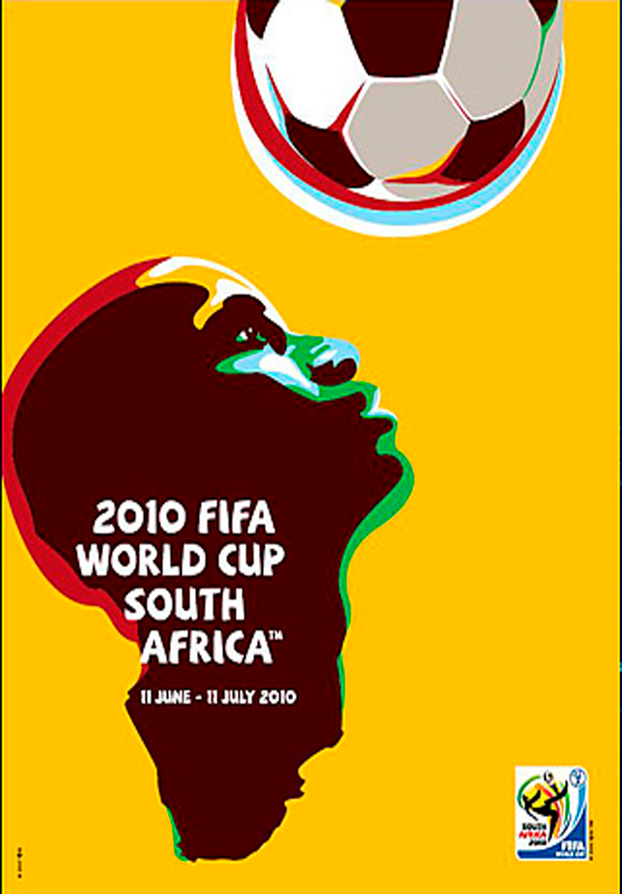
Sede: Sudáfrica
Campeón: España
Subcampeón: Países Bajos
Final: España 1-0 Países Bajos (Tiempo extra)
Goleador: Thomas Müller (Alemania) - 5 goles
Datos relevantes: España ganó su primer título mundial al derrotar a los Países Bajos 1-0 en tiempo extra. Este torneo fue el primero en ser organizado en África, marcando un hito en la historia del fútbol mundial.
Brasil 2014
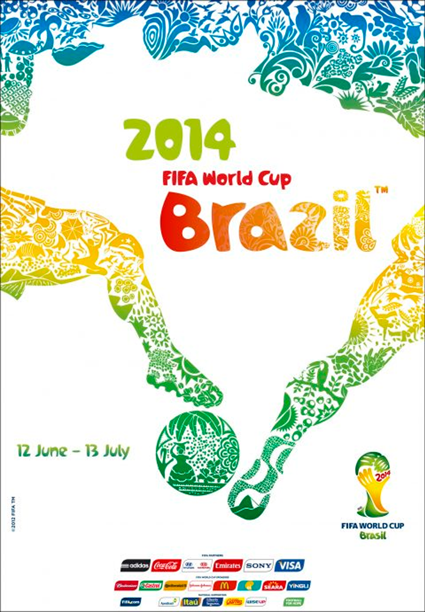
Sede: Brasil
Campeón: Alemania
Subcampeón: Argentina
Final: Alemania 1-0 Argentina (Tiempo extra)
Goleador: James Rodríguez (Colombia) - 6 goles
Datos relevantes: Alemania se coronó campeón al vencer a Argentina 1-0 en tiempo extra. Este torneo es recordado por la histórica derrota de Brasil 7-1 ante Alemania en las semifinales.
Rusia 2018

Sede: Rusia
Campeón: Francia
Subcampeón: Croacia
Final: Francia 4-2 Croacia
Goleador: Harry Kane (Inglaterra) - 6 goles
Datos relevantes: Francia ganó su segundo título mundial al derrotar a Croacia 4-2 en la final. Este torneo destacó el talento joven de jugadores como Kylian Mbappé y la gran campaña de Croacia.
Qatar 2022

Sede: Catar
Campeón: Argentina
Subcampeón: Francia
Final: Argentina 3-3 Francia (Argentina ganó 4-2 en penales)
Goleador: Kylian Mbappé (Francia) - 8 goles
Datos relevantes: Argentina ganó su tercer título mundial al vencer a Francia en una final épica 3-3, que se decidió en penales 4-2. Lionel Messi, quien fue la estrella del torneo, finalmente logró ganar el título que le había sido esquivo durante su carrera.
Estados Unidos, México y Canadá 2026

Sede: Estados Unidos, México y Canadá
Campeón: (Por determinar)
Subcampeón: (Por determinar)
Datos relevantes: Este será el primer Mundial con 48 equipos y la primera vez que tres países coorganizan el torneo. Se espera que sea un evento histórico con una gran participación de selecciones de todo el mundo.